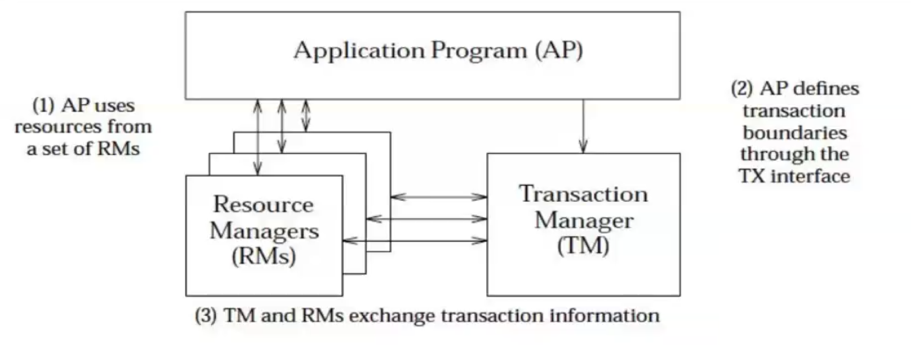
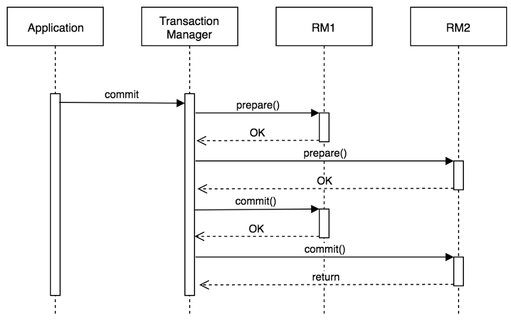
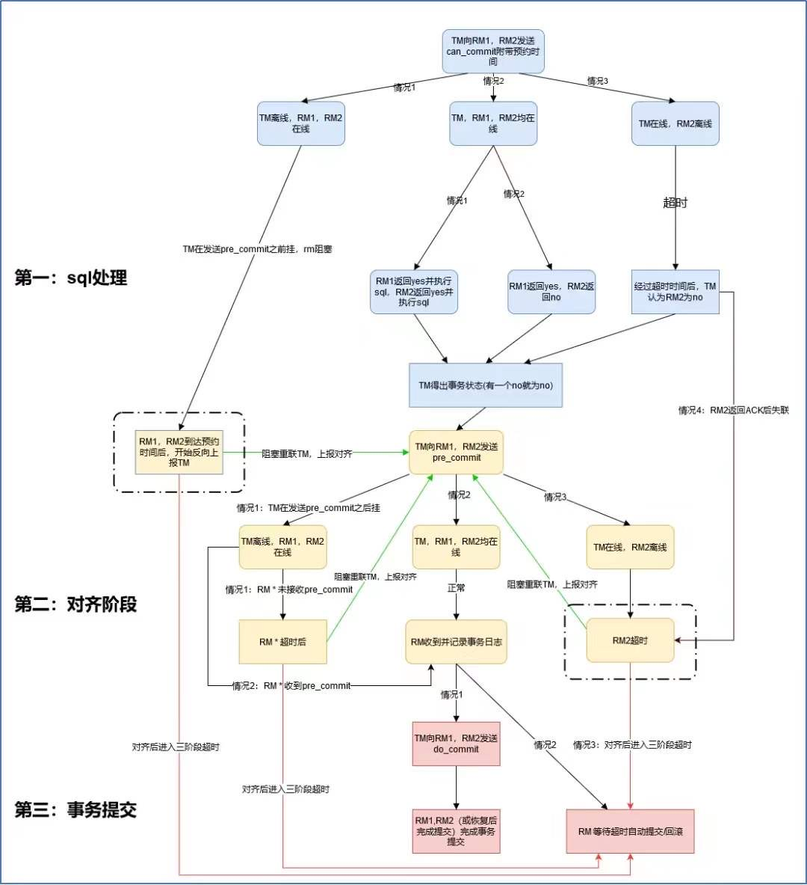
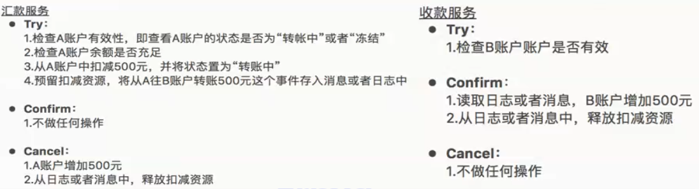
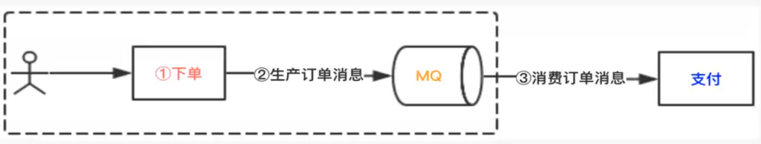
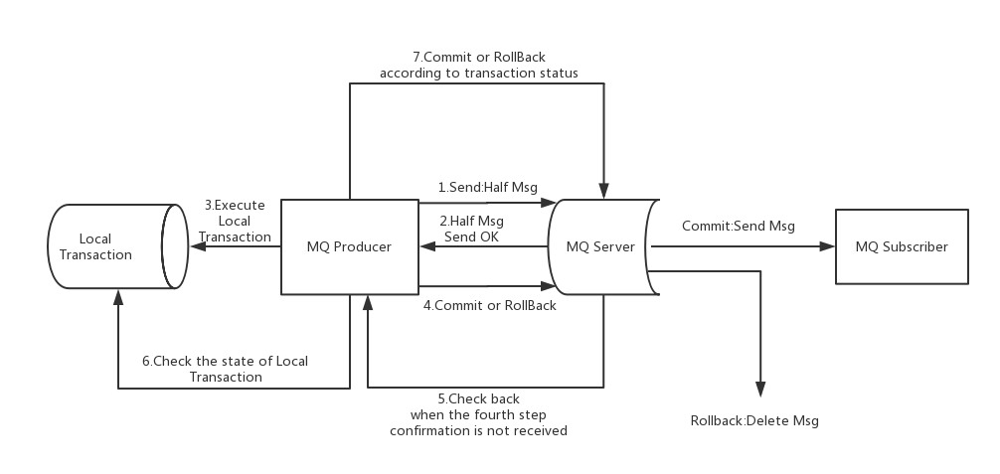
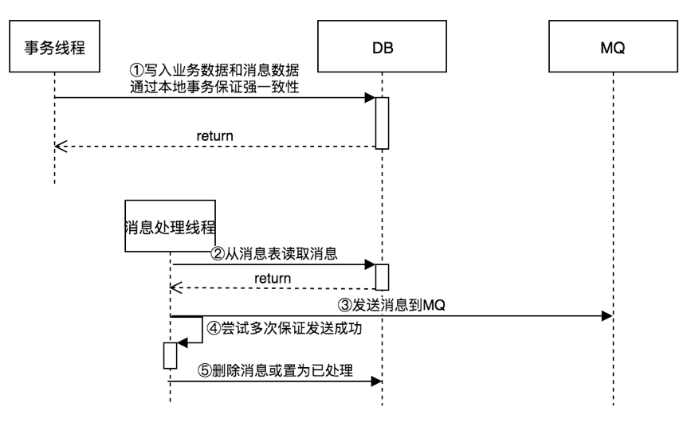
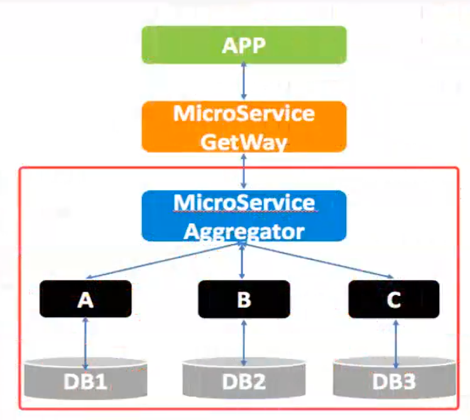
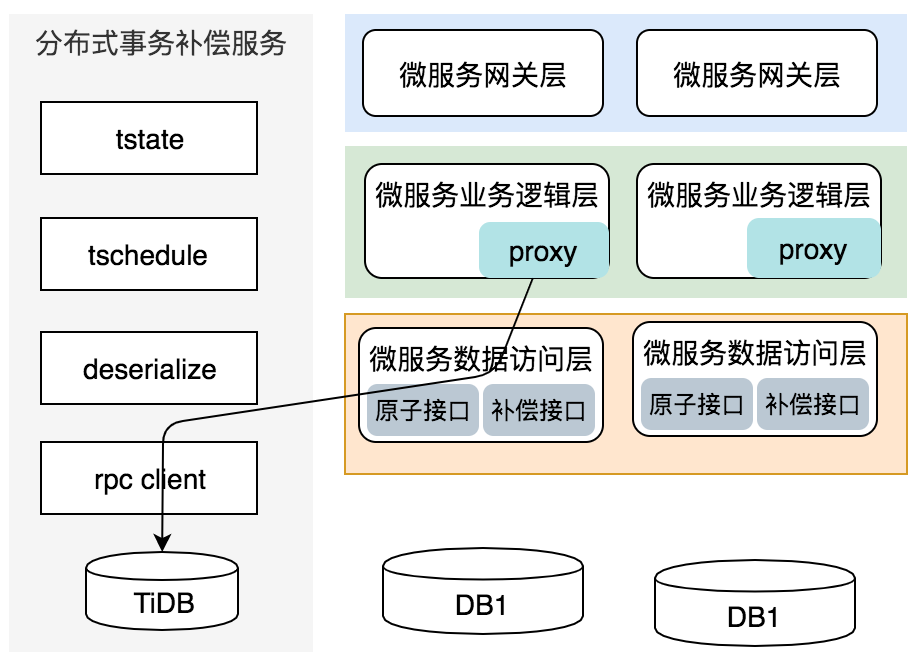

分布式事务设计
分布式场景下，一个流程（场景）会同时对应多个服务。比如电商下单场景，需要支付服务进行支付、库存服务扣减库存、订单服务进行订单生成、物流服务更新物流信息等。如果某一个服务执行失败，或者网络故障引起的请求丢失，那么整个系统可能出现数据不一致。这就是分布式一致性问题，追根到底，分布式一致性的根本原因在于数据的分布式操作，引起的本地事务无法保证数据的原子性引起。分布式一致性问题的解决思路有两种，一种是分布式事务，一种是尽量通过业务流程避免分布式事务。分布式事务是直接解决问题，而业务规避其实通过解决出问题的地方（解决提问题的人）。其实在真实业务场景中，如果业务规避不是很麻烦，最优雅的解决方案就是业务规避。
数据一致性定义：任何人、任何时间、任何点、任何接入方式、任何服务，数据都是一致的。
数据不一致性产生的原因：数据分散在多处（多个DB，DB或缓存）。
典型分布式事务场景
Connection connection = null;
try {
connection = DriverManager.getConnection("url");
Statement stmt = connection.createStatement();
stmt.execute("update table ..");//①
Message message = new Message("");
MQClient.sendMessage(message);//②
connection.commit();
} catch (Exception e) {
e.printStackTrace();
try {
connection.rollback();
} catch (Exception ee) {
ee.printStackTrace();
}
}
1、如果第①步失败了，正常回滚没问题
2、如果第①步成功了，第②步失败，抛出异常，回滚也没有问题
3、如果第①步成功了，第②步超时了，就不能确定第②步是否真的的成功，就容易出现事务不一致
如果步骤②一定可以成功，可以不停的重试步骤②直到成功，可以设置重试次数和超时时间，如果达到最大重试次数，或者超过一定时间，就不再重试，把数据插入到本地事务表（人工介入重发），事务提交。
分布式事务分类
分布式事务实现方案从类型上分刚性事务、柔型事务。
- 刚性事务：通常无业务改造，强一致性，原生支持回滚/隔离性，低并发，适合短事务
- XA 协议（2PC、JTA、JTS）、3PC
- 柔性事务：有业务改造，最终一致性，实现补偿接口，实现资源锁定接口，高并发，适合长事务。
- TCC/FMT、Saga（状态机模式、Aop模式）、本地事务消息、消息事务（半消息）
刚性分布式事务
1、强一致、XA模型，属于CAP中的CP模型。
2、满足传统事务特性，ACID（Atomicity原子性，Consistency一致性，Isolation隔离性，Durability持久性）
隔离级别：读未提交、读已提交（Oracle默认）、可重复读（MySQL默认）、序列化（分布式锁从隔离级别上讲是序列化）
- 3、XA模型
XA是X/Open CAE Sepcification（Distributed Transaction Processing）模型中定义，XA规范由AP，RM，TM组成。XA 接口函数由数据库厂商提供。
应用程序（Application Program，AP）：AP定义事务边界（定时事务开始和结束）并访问事务边界内的资源
资源管理器（Resource Manager，RM）：RM管理计算机共享资源，资源即数据库等
事务管理器（Transaction Manager，TM）：负责管理全局事务，分配事务唯一标识，控制事务的执行进度，并负责事务的提交、回滚、失败恢复等。

阿里最近开源Fescar分布式事务，不过还不成熟。
2PC
2PC，Two-phaseCommit，二阶段提交，是XA规范标准实现，AP发起事务commit请求，TM发起prepare投票，RM都同意后，TM再发起commit，Commit过程出现宕机，节点服务重启后，根据XA recover再次进行commit补偿。

2PC分成2个阶段，第一阶段：请求阶段（commit-request phase，或称表决阶段，voting phase）和第二阶段：提交阶段（commit phase）。
表决阶段：事务协调者（TM）串行给每个参与者（RM）发送Prepare消息，每个参与者要么直接返回失败，要么在本地执行SQL、记录事务日志(Undo、Redo)，但不提交，到达一种"万事俱备，只欠东风"的状态。二阶段提交协议中第一阶段就要执行SQL，记录日志
可以进一步将准备阶段分为以下三个步骤：
① TM串行向每个参与者节点询问是否可以执行提交操作，并等待各参与者节点的响应
② 参与者节点执行询问的所有SQL语句，并将Undo和Redo写入日志
③ 各参与者节点响应TM发起的询问。如果参与者节点的事务操作实际执行成功，则返回一个"success"消息；如果参与者节点的事务操作实际执行失败，则返回一个"abort"消息
提交阶段：如果TM收到了参与者的失败消息或者超时，直接给每个参与者发送回滚（Rollback）消息；否则，发送提交（Commit）消息；参与者根据TM的指令执行提交或者回滚操作，释放所有事务处理过程中使用的锁资源。（注意：必须在最后阶段释放锁资源）二阶段提交协议中第二阶段执行commit或rollback
分支一：当TM从所有参与者节点获得的相应消息都为"success"时
① TM向所有参与者节点发出"正式提交(commit)"的请求
② 参与者节点正式完成操作，并释放在整个事务期间内占用的资源
③ 参与者节点向TM发送"完成"消息
④ TM受到所有参与者节点反馈的"完成"消息后，完成事务
分支二：如果任一参与者节点在第一阶段返回的响应消息为"abort"，或者TM在第一阶段的询问超时之前无法获取所有参与者节点的响应消息时
① TM向所有参与者节点发出"回滚操作(rollback)"的请求
② 参与者节点利用之前写入的Undo信息执行回滚，并释放在整个事务期间内占用的资源
③ 参与者节点向TM发送"回滚完成"消息
④ TM受到所有参与者节点反馈的"回滚完成"消息后，取消事务
不管最后结果如何，第二阶段都会结束当前事务。
二阶段提交协议存在的问题：
1、全流程的同步阻塞：不管是第一阶段还是第二阶段，所有参与节点都是事务阻塞型。当参与者占有公共资源时，其他第三方访问公共资源不得不处于阻塞状态。同步阻塞模型、数据库资源锁定时间过长、全局锁（隔离级别是串行化），并发低、不适合长事务场景。
2、TM单点故障：由于全流程依赖TM的协调，一旦TM发生故障。参与者会一直阻塞下去。尤其在第二阶段，TM发生故障，那么所有的参与者还都处于锁定事务资源的状态中，而无法继续完成事务操作。所有参与者必须等待TM重新上线（TM重新选举）后才能继续工作。
3、TM脑裂引起数据不一致：在第二阶段中，当TM向参与者发送commit请求之后，发生了局部网络异常或者在发送commit请求过程中TM发生了故障，这会导致只有一部分参与者接受到了commit请求。而在这部分参与者接到commit请求之后就会执行commit操作。但是其他部分未接到commit请求的机器则无法执行事务提交。于是整个分布式系统便出现了数据不一致性的现象。
4、TM脑裂引起事务状态不确定：TM在发出commit消息之后宕机，而接收到这条消息的参与者同时也宕机了。那么即使通过选举协议产生了新的TM，这条事务的状态也是不确定的，没人知道事务是否被已经提交。
3PC
2PC是CP的刚性事务，追求数据强一致性。但在TM脑裂情况下可能会造成数据不一致和事务状态不确定问题。无法达到CP的完美状态。因此业界就出现了3PC，用来处理TM脑裂引起的数据不一致和事务状态不确定问题。因为3PC是为彻底解决的2PC的数据不一致和事务状态不确定问题而出现。根据这一个前提：
① 3PC确保任何分支下的数据一致性
② 3PC确保任何分支最多3次握手得到最终结果（超时机制）
③ RM超时后的事务状态必须从TM获取。2PC只有TM的超时机制，3PC新增了参与者（RM）的超时机制，一方面辅助解决了2PC的事务/事务问题，还能降低一定的同步阻塞问题。因为TM、RM双向超时机制，所以维基百科对3PC定义为"非阻塞"协议。

3PC分成3个阶段：CanCommit（准备阶段）、PreCommit（对齐阶段）、DoCommit（提交阶段）
准备阶段：跟2PC的表决阶段很类似，TM向参与者发送commit请求，参与者如果可以提交就返回Yes，否则返回No，询问超时默认参与者为No。唯一差别在于SQL层面：准备阶段只做了SQL处理，并未记录事务日志（Undo和Redo）
对齐阶段：TM和各个参与者对齐事务状态，TM通知各个参与者事务最终状态，各个参与者如果一直未收到事务对齐通知，会在超时后从TM反查事务状态实现事务状态对齐。在SQL层面：事务状态对齐后，记录事务日志（Undo和Redo）
提交阶段：该阶段进行真正的事务提交。根据第二阶段得到的事务状态结果，各参与者根据TM的通知命令进行提交/abor或者超时后自动提交/abort。
总结：
或许3PC也不完美，网上有好多各版本的3PC的流程图和解释。有的甚至还存在明显的问题，为3PC的理解带来了更大的苦难。身为架构师，就需要去追寻本质，了解3PC的前世今生，抓住3PC的本质，就很容易理解3PC了。
对于数据一致性，Google Chubby的作者Mike Burrows说过："there is only one consensus protocol, and that's Paxos" -- all other approaches are just broken versions of Paxos。"
译文：世上只有一种一致性算法，那就是Paxos，所有其他一致性算法都是Paxos算法的不完整版。
柔性分布式事物
最终一致性，CAP，BASE理论，属于AP模型。
CAP：一致性、可用性、分区容错性不能同时兼备。在分布式环境下P一定需要，CA权衡折中。
BASE理论：Basically Available基本可用，Soft state软状态，Eventual consistency最终一致性。
架构思考：柔性分布式事务是对XA协议的妥协，它通过降低强一致性要求，从而降低数据库资源的锁定时间，提升可用性。
典型实现：TCC模型，Saga模型
TCC模型
Try-Confirm-Cancel：TCC模型完全交由业务实现，每个子业务都需要实现Try-Confirm-Cancel三个接口，对业务侵入大，资源锁定交由业务方。也属于两阶段提交模型（Try成功Confirm，Try失败Cancel）。
Try：尝试执行业务，完成所有业务检查，预留必要的业务资源
Confirm：真正执行业务，不再做业务检查
Cancel：释放Try阶段预留业务资源
示例：A用户向B用户汇款500元

Saga模型
起源于1987年Hector Garica-Molina，Kenneth Salem发表的论文《Sagas》。Saga模型把一个分布式事务拆分为多个本地事务，每个本地事务都有相应的执行模块和补偿模块（对应TCC中的Confirm和Cancle）。当Saga事务中任意一个本地事务出错时，可以通过调用相关的补偿方法恢复之前的事务，达到事务最终一致性。当每个Saga子事务T1,T2,...,Tn都有对应的补偿定义C1,C2,...,Cn-1那么Sage系统可以保证：
a. 子事务序列T1,T2,...,Tn得以完成（最佳情况）
b. 或者序列T1,T2,...,Tj,Cj-1,,C2,C1（0<j<n）得以完成
Saga的隔离性：业务层控制并发，在应用层加锁，应用层预先冻结资源
Saga恢复方式：向后恢复，补偿所有已完成的事务，如果任一子事务失败；向前恢复，重试失败的事务，假设每个子事务最终都会成功。
刚性分布式事务与柔性分布式事务对比
| 刚性事务（XA） | 柔性事务 | |
|---|---|---|
| 业务改造 | 无 | 有 |
| 回滚 | 支持 | 实现补偿接口 |
| 一致性 | 强一致 | 最终一致 |
| 隔离性 | 原生支持 | 实现资源锁定接口 |
| 并发性能 | 严重衰退 | 略微衰退 |
| 适合场景 | 短事务，并发较低 | 长事务，并发高 |
如何解决分布式事务
首先尽量规避分布式事务，引入分布式事务后系统将变的复杂容易出错。考虑从业务场景消除分布式事务。思路：核心业务先处理，其它业务异步处理。如果实在需要采用分布式事务，则使用柔性分布式事务。
柔性分布式事务通用处理思路：长事务转变成短事务（本地事务）。
- 异步场景：基于MQ消息驱动分布式事务

- 同步场景：基于异步补偿方式（Saga模型）
异步场景分布式事务设计
方案一：基于RocketMQ事务消息，业务方提供本地操作是否成功的回查功能

上图说明了事务消息的大致方案，其中分为两个流程：正常事务消息的发送及提交、事务消息的补偿流程。
1、事务消息发送及提交：
①发送消息（half消息）
②服务端响应消息写入结果
③根据发送结果执行本地事务（如果写入失败，此时half消息对业务不可见）
④根据本地事务状态执行Commit或者Rollback（Commit操作生成消息索引，消息对消费者可见）
2、补偿流程：
⑤对没有Commit/Rollback的事务消息（pending状态的消息），从MQ服务端发起一次"回查"
⑥Producer（同ProducerGroup）收到回查消息，检查回查消息对应的本地事务的状态
⑦根据本地事务状态，重新Commit或者Rollback
其中，补偿阶段用于解决消息Commit或者Rollback发生超时或者失败的情况（第④阶段异常）
方案的优点：通用；缺点：业务方需要提供回查接口，对业务侵入大，发送消息非幂等，消费端需要处理幂等。
方案二：本地事务消息表，本地操作和发送消息（记录本地消息表）通过本地事务强一致

假如第一步成功，第二部从MQ中消费处理业务一直不能成功，需要记录错误日志、报警然后人工介入。
优点：业务侵入小，不需要实现回查接口，且不依赖于MQ的事务消息，缺点：仍然需要考虑消息去重。
需要注意：
1、部署多个进程获取数据发送消息时，需要使用分布式锁，避免大量消息的重复发送
2、部署多个消费进程时，因为消息可能会重复需要考虑使用分布式锁和业务幂等问题。
同步场景分布式事务设计

解决方案：基于异步补偿的分布式事务，为什么是异步？失败后直接返回用户失败，然后异步执行补偿。
架构设计的三大关键点：基于补偿机制，记录请求调用链条，提供幂等补偿接口。

业务逻辑层Proxy设计（基于AOP实现）
1、逻辑层调用方法上加上事务注解@Around("execution(* *(..)) &&
@annotation(TX)")，环绕注解器
2、Proxy在真正业务逻辑被调用前，生成一个全局唯一TXID标示事务组，TXID保存在ThreadLocal变量中
逻辑层方法开始调用前，向事务组表中记录：事务组ID，状态（初始状态），开始时间，结束时间
逻辑层方法调用接受后，通过TXID更新事务组状态（成功或失败）、结束时间
3、业务逻辑层调用数据访问层之前，通过RPCProxy代理记录当前调用请求参数
通过RPCProxy代理实现，拦截请求参数，自增生成请求序列号，请求参数通过序列化后保存。输出存储在事务调用表：事务组ID，事务序号，调用方法，参数类型，参数（序列化后的二进制）
4、如果业务正常，调用完成后，当前方法的调用记录存档或删除（记录事务组状态成功）
5、如果业务异常，记录事务组状态为失败，事务补偿服务查询调用链反向补偿
数据访问层设计
1、提供的是原子接口，并提供该原子接口的补偿接口，补偿接口需要保证幂等
2、在原子接口上通过注解的形式标示出它的补偿接口@Compensable(cancelMethod="cancelRecord")
分布式事务补偿服务
1、事务组表，记录事务组状态（txid, state, stimestamp,etimestamp）
2、事务调用组表，记录事务组内的每一次调用以及相关参数（txid, actionid, callmethod, pramatype, params）。params中记录的是序列化后的对象，可采用blob形式存储
3、补偿策略：分布式事务补偿服务tshchedule定时扫描出异常事务，执行补偿
4、补偿服务失败：记录错误日志，报警，人工介入